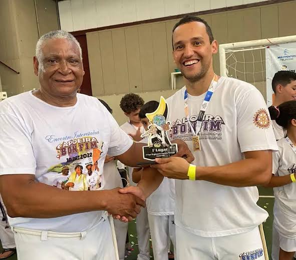
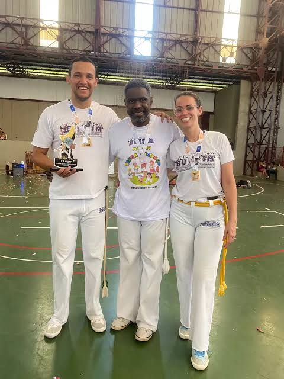

Homenagem ao Professor Domenico e à Graduada Lucy
Um agradecimento especial por todo esforço, comprometimento e dedicação ao longo de 5 anos de caminhada.


Galeria de agradecimentos
Palavras de carinho e gratidão dedicadas ao Professor Domenico, à Graduada Lucy e à família Capoeira Bonfim. Os depoimentos são preservados como foram enviados.
Uma família para levar no coração
Hoje, meu coração se enche de gratidão pelo professor Domenico, pela graduada Lucy e por toda a família Capoeira Bonfim.
Obrigada por cada ensinamento, cada conselho e por me mostrarem que a capoeira vai muito além de golpes e movimentos: ela ensina respeito, humildade, disciplina e união. Sou grata por fazer parte dessa família e por ter pessoas tão especiais contribuindo para minha caminhada.
Que Deus abençoe cada um de vocês e que Nossa Senhora os cubra sempre com seu manto sagrado.
Levo comigo não apenas os ensinamentos da capoeira, mas também o carinho e os valores que aprendo com vocês. Obrigada por fazerem parte da minha história!
Capoeira Bonfim, muito mais que capoeira, uma família!
Laura MazzettoGratidão pelo carinho e dedicação
Quero deixar meu agradecimento de coração à Lucy e ao Domenico, duas pessoas maravilhosas e muito especiais! ❤️🙏🏻
Ao professor Domenico, pela dedicação em ensinar a capoeira, e à Lucy, por todo o carinho e apoio, por ser gentil com todos nós e muita amiga. Que Deus abençoe grandemente a vida de vocês, retribuindo todo o bem que fazem. Sou muito grato por ter pessoas tão especiais assim no meu caminho! ❤️🙌🏻
Daniel Perna Longa